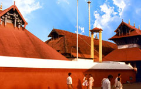
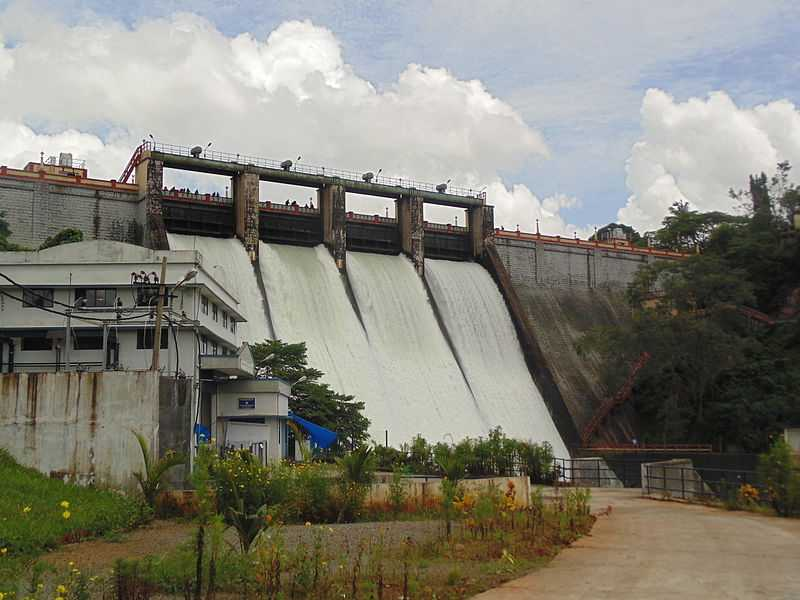

Guruvayoor Temple

Guruvayoor is one of the most sacred and important pilgrim centres of Kerala. Its main attraction is the Sree Krishna Temple. This historic temple is shrouded in mystery. According to belief, the temple is the creation of Guru, the preceptor of the Gods, and Vayu, the God of winds. The eastern nada is the main entrance to the shrine.
Read More...Athirappilly Falls

Athirappilly Falls, is situated in Athirappilly Panchayat, Chalakudy Taluk, Thrissur District of Kerala, India on the Chalakudy River, which originates from the upper reaches of the Western Ghats at the entrance to the Sholayar ranges.It is the largest waterfall in Kerala, which stands tall at 80 feet. Just a short drive from Athirapally to the Vazhachal falls, which is close to dense green forests that are home to many endangered and endemic species of flora and fauna.
Read More...Peechi Dam

Peechi Dam lies at a distance of 23 km from Thrissur. The dam is the main irrigation project of this town of Kerala. It is a very famous attraction, and visitors come here now and then for the fantastic picnic spot it serves as and for the boating facilities which are offered at this reservoir. One can also come across Peechi-Vazhani Wildlife Sanctuary here which is a must-visit place for the nature-lovers. The dam is constructed across the Manali River.
Read More...